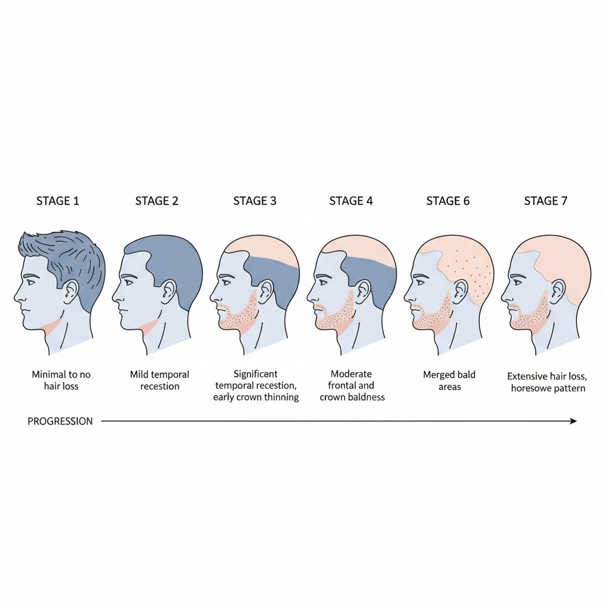

If you're a man noticing thinning hair, you're far from alone. By age 35, two-thirds of American men will experience some degree of hair loss. By age 50, that number rises to 85%. Despite how common it is, thinning hair can feel isolating, frustrating, and confidence-draining.
The good news? We live in an era with more effective solutions than ever before. The challenge is cutting through the noise—the miracle cures that don't work, the expensive procedures with disappointing results, and the one-size-fits-all advice that ignores your specific situation.
This guide provides an honest, science-based look at male pattern baldness and the solutions that actually deliver results.
Understanding Male Pattern Baldness
Before exploring solutions, it's crucial to understand what's actually happening when your hair thins. Male pattern baldness (androgenetic alopecia) isn't caused by stress, wearing hats, or shampooing too much—those are myths.
The Real Cause: DHT
Male pattern baldness is primarily genetic and hormonal. Here's the science:
- • Your body converts testosterone into DHT (dihydrotestosterone)
- • If you have the genetic predisposition, DHT shrinks hair follicles over time
- • Affected follicles gradually produce thinner, shorter hairs
- • Eventually, these follicles stop producing visible hair altogether
The Norwood Scale classifies male pattern baldness into seven stages, from minimal hairline recession (Stage 1) to extensive hair loss with only a band of hair remaining on the sides and back (Stage 7). Understanding your stage helps determine which solutions will be most effective.

Early Stages (1-3)
Hairline recession, minor thinning at crown. Most treatment options are effective.
Advanced Stages (4-7)
Significant hair loss. Medications less effective; cosmetic solutions crucial.
Can Lifestyle Changes Help?
Let's be honest: if you have male pattern baldness, lifestyle changes alone won't reverse it. However, optimizing your health can support overall hair health and maximize the effectiveness of treatments.
Stress Management
Chronic stress doesn't cause male pattern baldness, but it can trigger telogen effluvium (temporary shedding) and worsen existing hair loss. Managing stress supports overall health.
Nutrition
Severe nutritional deficiencies (iron, zinc, biotin, protein) can cause hair loss. But if you eat a reasonably balanced diet, supplements won't regrow hair lost to male pattern baldness.
Sleep Quality
Poor sleep affects hormone regulation and can accelerate hair loss. Aim for 7-9 hours of quality sleep. It won't cure baldness, but it supports treatment effectiveness.
Exercise
Regular exercise improves circulation and hormone balance. It won't prevent genetic hair loss, but it creates a healthier environment for your hair and overall well-being.
The Reality: Lifestyle optimization is important for overall health, but it's not a standalone solution for male pattern baldness. Think of it as supporting your primary treatment strategy, not replacing it.
Proven Treatment Options
When it comes to treating male pattern baldness, solutions fall into three categories: medical treatments, surgical procedures, and cosmetic solutions. Here's what actually works:
Medical Treatments
Finasteride (Propecia) - Most Effective
The gold standard for slowing/stopping hair loss. Blocks DHT conversion, preventing further miniaturization of follicles.
- • Effectiveness: 90% stop further loss; 60% see regrowth
- • Timeline: Results visible in 3-6 months
- • Commitment: Daily pill, lifelong use required
- • Cost: $20-70/month
- • Considerations: 2-4% experience sexual side effects; requires prescription
Minoxidil (Rogaine) - FDA Approved
Over-the-counter topical solution that stimulates follicles and prolongs growth phase.
- • Effectiveness: 40-60% see reduced shedding and modest regrowth
- • Timeline: Results visible in 4-6 months
- • Commitment: Twice daily application, lifelong use
- • Cost: $30-50/month
- • Considerations: Scalp irritation common; most effective on crown
Combination approach: Using finasteride and minoxidil together provides the best results for medical treatment. They work through different mechanisms and complement each other effectively.
Surgical Solutions
Hair Transplant (FUE/FUT)
Surgical redistribution of your existing hair from donor areas to thinning zones. The only permanent solution.
- • Effectiveness: High when done by skilled surgeon with realistic expectations
- • Timeline: 6-12 months for final results
- • Commitment: One-time procedure (though multiple sessions sometimes needed)
- • Cost: $4,000-$15,000+
- • Considerations: Requires sufficient donor hair; doesn't stop continued loss in non-transplanted areas; expensive; variable results based on surgeon skill
Important note: Even with a successful transplant, you typically need finasteride or minoxidil to prevent continued loss in non-transplanted hair. A transplant alone doesn't stop male pattern baldness.
Cosmetic Solutions
Hair Fibers - Instant Results
Keratin microfibers that electrostatically bond to existing hair, instantly creating the appearance of fuller, thicker hair.
- • Effectiveness: Dramatically improves appearance of thinning hair immediately
- • Timeline: 30 seconds
- • Commitment: Daily application (30 seconds)
- • Cost: $29-79 (lasts 1-2 months)
- • Considerations: Cosmetic only (doesn't treat underlying loss); requires some existing hair; fully reversible
Why this matters: Medical treatments take months to work. Surgery takes a year to show final results. But life happens today—job interviews, dates, social events. Cosmetic solutions like hair fibers provide instant confidence while you pursue long-term treatments.
Many men use hair fibers daily while taking finasteride/minoxidil for long-term treatment. There's no conflict—they address different needs.
Creating Your Personal Strategy
The most effective approach isn't choosing one solution—it's creating a strategy that addresses both immediate confidence and long-term hair health.
1 Early Stage Hair Loss (Norwood 1-3)
- • Primary treatment: Start finasteride to stop/slow progression
- • Optional addition: Add minoxidil for potential regrowth
- • Immediate confidence: Use hair fibers for important occasions or daily if desired
- • Timeline: Medical treatments show results in 3-6 months; fibers work instantly
2 Moderate Hair Loss (Norwood 4-5)
- • Primary treatment: Finasteride + minoxidil combination to preserve existing hair
- • Cosmetic solution: Hair fibers become more important for coverage
- • Consider: If stable on medication for 1+ year, consult about hair transplant
- • Timeline: Medications prevent further loss; fibers provide coverage now
3 Advanced Hair Loss (Norwood 6-7)
- • Primary solution: Hair fibers (if sufficient hair remains) or hair system
- • Medication: Still worthwhile to prevent loss of remaining hair
- • Transplant: May not be viable due to insufficient donor hair
- • Alternative: Consider embracing a shaved head—confidence transcends hair
What Doesn't Work (Save Your Money)
The hair loss industry is filled with products that prey on desperate men. Here's what to avoid:
Hair Growth Shampoos
Don't reverse male pattern baldness. At best, they create healthier scalp conditions. Marketing hype exceeds results.
Laser Combs/Helmets
Limited FDA approval, minimal evidence of effectiveness. Expensive devices with disappointing real-world results.
Biotin Supplements
Only helps if you're deficient (rare). Won't reverse genetic hair loss. Most people waste money on unnecessary supplementation.
Essential Oils
Rosemary oil, peppermint oil, etc.—no credible evidence they reverse male pattern baldness. Pleasant smell, zero efficacy.
The Confidence Factor
Here's something rarely discussed in hair loss guides: your confidence matters more than your hair count.
Studies show that men who address their thinning hair—whether through treatment, cosmetic solutions, or acceptance—report higher confidence and life satisfaction than those who stress about it without taking action. The specific solution matters less than moving from anxiety to agency.
Three paths forward, all valid:
- 1. Treat it: Use medical solutions to slow/stop loss, cosmetics for immediate coverage
- 2. Cover it: Skip medications, use cosmetic solutions for appearance enhancement
- 3. Own it: Embrace the shaved head look—confidence transcends hair
The worst path? Worrying constantly without taking any action. Choose a strategy and commit to it.
Final Thoughts
Male pattern baldness is frustrating, but it's also manageable. The solutions that work—finasteride, minoxidil, hair transplants, and cosmetic options like hair fibers—are more accessible and effective than ever.
The key is realistic expectations. Medical treatments slow/stop loss and may provide modest regrowth. Surgery relocates existing hair. Cosmetic solutions create immediate appearance improvement. No magic cure exists, but real solutions do.
Start where you are. If you need confidence today, hair fibers provide instant results. If you want to address the root cause, start finasteride after consulting a doctor. If you're committed to a permanent solution, research surgeons and start saving.
Whatever path you choose, take action. Your confidence is waiting.
Look Fuller Today
While you're planning your long-term strategy, get instant coverage and confidence with Halo Fibers. No commitment, just results.
Shop Halo Fibers